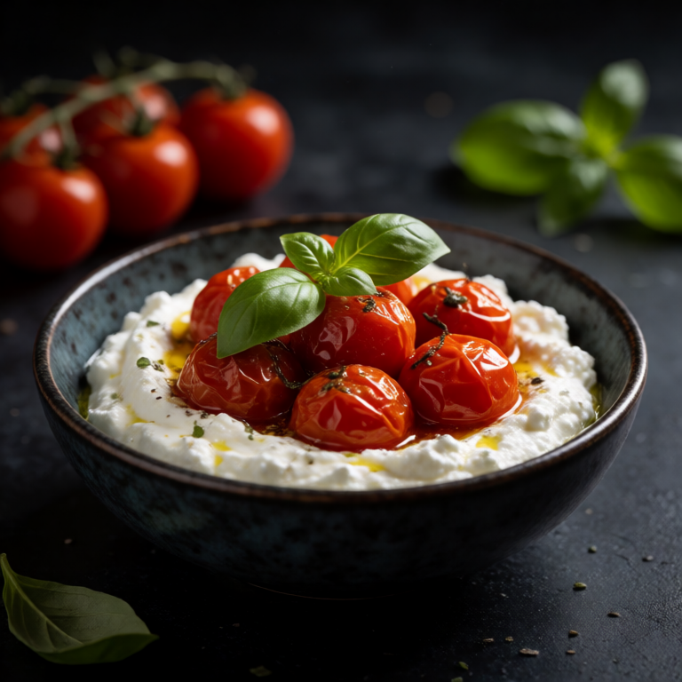
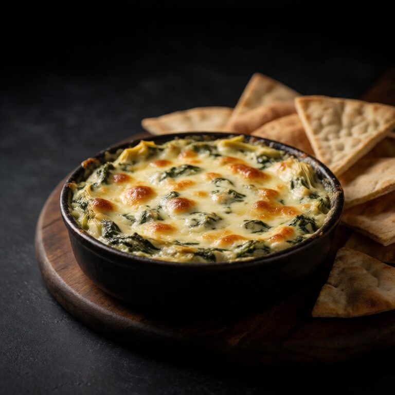

Warm, cheesy, bubbly dip made in 20 minutes. The shareable girl dinner.
This is more satisfying when the dip and its scoops are treated as one recipe. Keep the center creamy, the edges well seasoned, and the bread or chips close by.
At a Glance
Prep
5m
Cook
20m
Serves
1
Difficulty
Easy
Ingredients
Method
- 01
Mix
Combine the 1/2 cup of thawed and squeezed spinach, 1/2 cup of chopped artichoke hearts, 100g of cream cheese, 3 tablespoons of sour cream, 40g of grated parmesan, and 1 clove of minced garlic in an oven safe dish. Stir to combine.
- 02
Bake
Bake at 375F/190C for 20 minutes until bubbly and golden. Broil for 2 minutes for extra color.
- 03
Dip
Let the dip stand for 2 minutes, then set the hot dish on a heatproof board. Serve with pita chips or sturdy crackers while the center is still creamy and the top is browned.
Slop Notes
Squeezing every drop of water from the spinach is essential. Otherwise the dip gets watery.
Recipe by foidslop · How we create our recipes